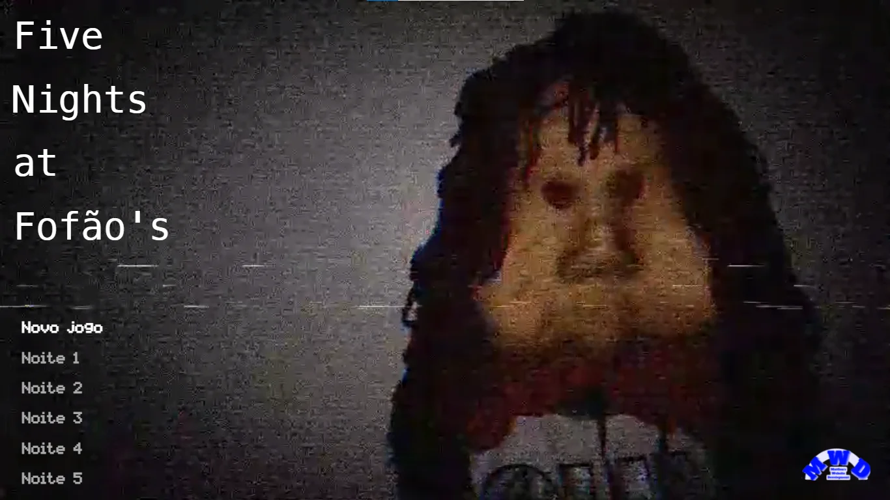
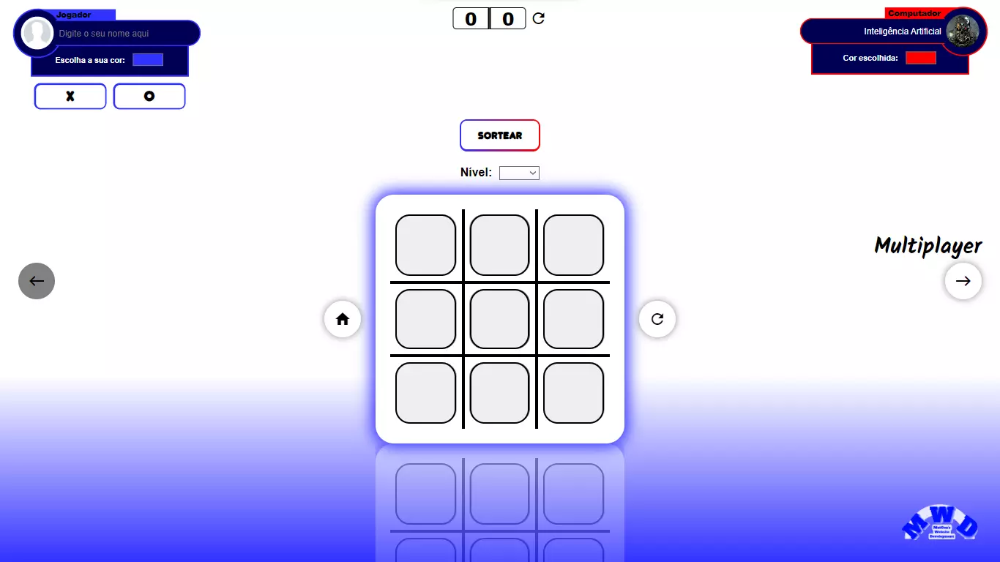
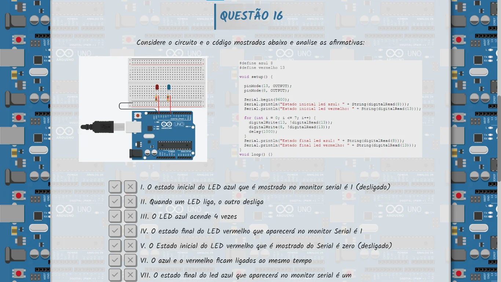

Como Programo
HTML (Hypertext Markup Language) é como a espinha dorsal da internet. Ele é usado para criar páginas da web e dizer ao navegador como exibir o conteúdo. Imagine o HTML como a estrutura de uma casa, definindo onde as paredes, portas e janelas devem estar. Ele lida com o conteúdo e a estrutura da página, como texto, imagens e links.
Meus Sites
-

Fnafão
-
Astronomia
-

Jogo da Velha
-
Acessarclose1°
Família Ware
Este é o meu 1° site já feito, criado no dia 18 de Setembro de 2022. Trata-se de um trabalho da matéria de PLE (Prática de Leitura e Escrita) em que tive que escolher um assunto para apresentar. É sobre os 3 princiapais usos do sufixo ware, as palavras software, hardware e malware.
Família Ware
-
Acessarclose2°
Mysterynews
Este é o meu 2° site já feito, criado no dia 29 de Outubro de 2022. Trata-se de um trabalho de redação de uma narrativa de suspense cujo nome é "Os irmãos Shelby".
Mystery News
-
Acessarclose3°
Trabalho de Espanhol
Este é o meu 3° site já feito, criado no dia 2 de Novembro de 2022. Trata-se de um trabalho de Espanhol sobre a biografia e discografia de um cantor espanhol chamado Ricky Martin.
Trabalho de Espanhol
-
Acessarclose4°
Astronomia
Este é o meu 4° site já feito, criado no dia 9 de Novembro de 2022. Trata-se de um trabalho de Física onde se explica tudo sobre o Sistema Solar, bem como os fenômenos ocorridos no espaço, tal qual o Big Bang, movimentos terrestres e lunares, eclipses, e muito mais.
Astronomia
-
Acessarclose5°
Decor
Este é o meu 5° site já feito, criado no dia 20 de Março de 2023. Trata-se de um projeto próprio desenvolvido com uma ideia de um programa para decorar palavras. Uma funcionalidade para matemática ainda não está disponível.
Decor
-
Acessarclose6°
Brexit
Este é o meu 6° site já feito, criado no dia 28 de Abril de 2023. Trata-se de um trabalho de Geografia, um semiário para apresentar sobre o Brexit, um movimento de saída do Reino Unido da União Europeia.
Brexit
-
Acessarclose7°
Resumo
Este é o meu 7° site já feito, criado no dia 30 de Maio de 2023. Trata-se de uma página com uma série de resumos feitos pelo ChatGPT de livros a serem lidos que cairão na prova para auxiliar os alunos.
Resumo
-
Acessarclose8°
Jogo da Velha
Este é o meu 8° site já feito, criado no dia 30 de Junho de 2023. Trata-se de um jogo da velha com design único, com muitas funcionalidades, nome do jogador customizável, e 2 níveis de jogo: Contra o computador e multiplayer.
Jogo da Velha
-
Acessarclose9°
Rússia
Este é o meu 9° site já feito, criado no dia 29 de Agosto de 2023. Trata-se de um trabalho de Geografia, um semiário para apresentar os Aspectos Econômicos da Rússia, que atua na agricultura e pecuária, recursos energéticos, industria, população e conflitos.
Rússia
-
Você já está nesse siteclose10°
Sobre
Este é o meu 10° site já feito, criado no dia 4 de Setembro de 2023. Trata-se de um portfólio que contém todos os meus sites que já programei.
Sobre
-
Acessarclose11°
Fnafão
Este é o meu 11° site já feito, criado no dia 30 de Janeiro de 2024, um jogo totalmente feito com apenas html, css e js. Trata-se de um "fangame" de fnaf (Five Nights at Freddy's), usando mecânicas e lógicas parecidas.
Fnafão
-
Acessarclose12°
OBR - Arduino
Este é o meu 12° site já feito, criado no dia 27 de Fevereiro de 2024. Trata-se de uma apresentação sobre a questão 16 de uma das provas da OBR (Olimpíada Brasileira de Robótica). Esta questão retrata o funcionamento de um código usado para alternar o estado (ligado e desligado) de 2 leds controlados pelo Arduino. Esse projeto também foi executado na prática pela plataforma Tinkercad.
OBR - Arduino